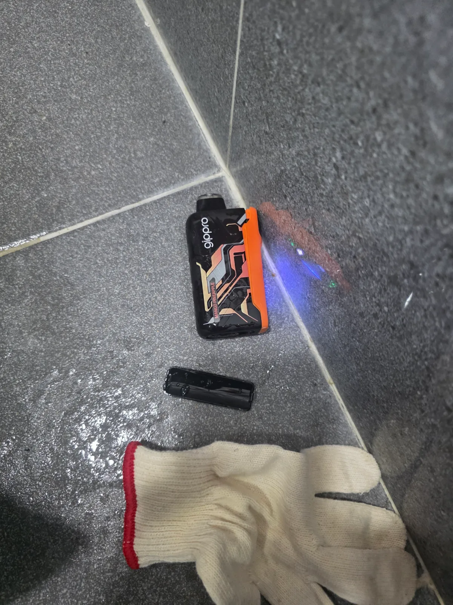
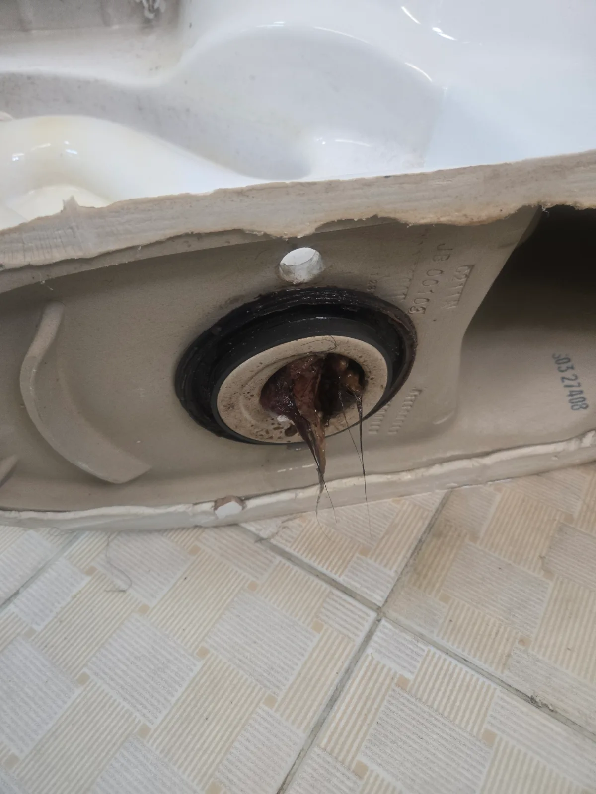

강서구 하수구막힘·변기뚫는업체, 재설치 후 물내림과 누수까지 확인
강서구에서 변기 뚫는 업체를 선택할 때에는 이물질 제거뿐 아니라 재설치 뒤의 물내림과 누수 점검까지 살펴보세요. 물티슈·휴지 제거와 에어건 작업으로 마무리하고 재설치 후 원활한 물내림과 누수 없는 상태까지 확인했습니다.
서울 · 강서구 · 변기막힘
강서구에서 실제로 해결한 변기막힘 사례를 바탕으로 변기뚫는업체를 찾을 때 확인할 증상과 작업 방법을 정리했습니다. 물이 천천히 내려가거나 수위가 차오르는 막힘, 물이 안 내려가는 증상, 이물질 막힘, 반복 막힘, 변기 역류 등은 원인이 서로 다를 수 있어 현장 진단 후 필요한 범위를 안내합니다.
물이 천천히 내려가거나 수위가 차오르는 막힘, 물이 안 내려가는 증상, 이물질 막힘, 반복 막힘, 변기 역류처럼 비슷해 보이는 증상도 원인 구간은 다를 수 있습니다. 신라건축설비는 실제 출동 기록을 기준으로 증상·원인·사용 장비·작업 결과를 공개합니다.
주요 점검·작업: 석션·에어건·내시경 점검·변기 탈거와 오수관 확인
변기막힘·변기뚫는업체 전체 서비스와 지역별 사례 보기 →강서구에서 변기 뚫는 업체를 선택할 때에는 이물질 제거뿐 아니라 재설치 뒤의 물내림과 누수 점검까지 살펴보세요. 물티슈·휴지 제거와 에어건 작업으로 마무리하고 재설치 후 원활한 물내림과 누수 없는 상태까지 확인했습니다.

강서구에서 하수구 뚫는 업체를 찾으실 때에는 실제 막힌 위치에 맞춰 작업하는지 확인하는 것이 중요합니다. 하부 배관에 걸쳐 있던 이물질을 먼저 제거하고 남은 부분을 에어건으로 처리한 뒤 변기를 재설치했습니다.

변기가 막혔을 때 탈거까지 해야 하는지 궁금하시다면, 먼저 시도한 작업의 결과와 남아 있는 문제를 함께 살펴보세요. 첫 작업의 한계를 충분히 설명하고 탈거를 협의한 뒤, 아래쪽에 걸린 물티슈와 휴지를 확인해 제거한 기록입니다.

휴지를 많이 회수한 것과 배수 통로가 정상으로 돌아온 것은 구분해서 확인해야 합니다. 석션으로 많은 휴지를 회수했지만 하부에 물티슈와 휴지가 남아 있어, 고객 협의 후 탈거와 후속 작업을 진행했습니다.

하수구 막힘으로 상담하시는 배수 불편 중에는 변기와 그 아래 연결부를 확인해야 하는 경우도 있습니다. 물이 꿀렁거리는 증상에서 출발해 석션과 탈거로 원인을 확인하고, 이물질 제거 후 물내림과 누수를 점검한 사례입니다.

강서구 화곡동 변기막힘 서울 강서구 화곡동 변기막힘 현장에서 변기를 탈거한 뒤 하부 배출구에서 역방향 에어건 작업을 진행해 내부에 걸려 있던

강서구 화곡동 변기막힘 변기를 탈거해 내부 배출구의 머리카락과 배설물 이물질을 제거하고 재설치 후 통수 확인